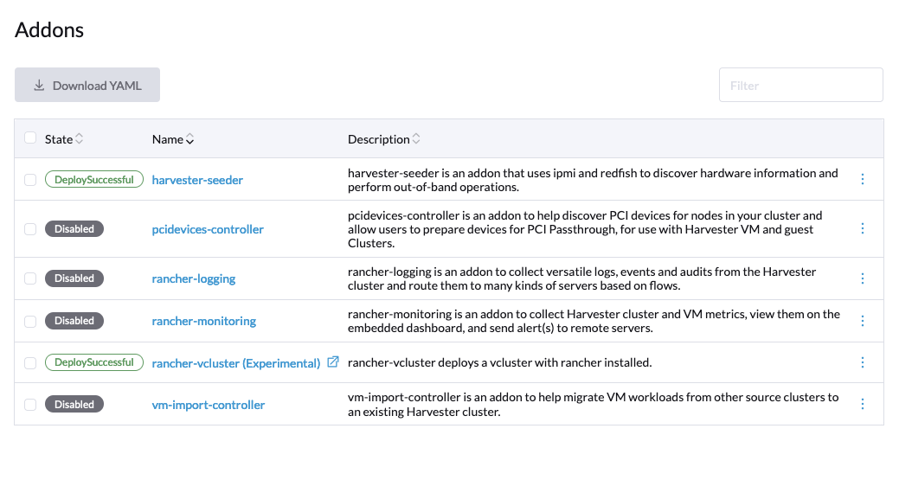

Controlador de Importación de VM
Puedes importar máquinas virtuales desde VMware, OpenStack y paquetes de Open Virtual Appliance (OVA) en SUSE Virtualization utilizando el complemento vm-import-controller. El complemento debe estar habilitado antes de comenzar a importar máquinas virtuales.

Por defecto, el vm-import-controller utiliza almacenamiento efímero, que se monta desde /var/lib/kubelet.
Durante la migración, un nodo de una máquina virtual grande podría quedarse sin espacio en este montaje, lo que resultaría en fallos de programación posteriores.
Para evitar esto, se aconseja a los usuarios habilitar almacenamiento respaldado por PVC y personalizar la cantidad de almacenamiento necesaria. Según la mejor práctica, el tamaño del PVC debería ser el doble del tamaño de la máquina virtual más grande que se esté migrando. Esto es esencial ya que el PVC se utiliza como espacio temporal para descargar la máquina virtual y convertir los discos en archivos de imagen en bruto.

vm-import-controller
Actualmente, se admiten los siguientes proveedores de origen:
-
VMware
-
OpenStack
-
Open Virtual Appliance (OVA)
API
El vm-import-controller introduce dos CRDs.
Orígenes
Los orígenes permiten a los usuarios definir clústeres de origen válidos.
Por ejemplo:
apiVersion: migration.harvesterhci.io/v1beta1
kind: VmwareSource
metadata:
name: vcsim
namespace: default
spec:
endpoint: "https://vscim/sdk"
dc: "DCO"
credentials:
name: vsphere-credentials
namespace: defaultEl secreto contiene las credenciales para el punto final de vCenter:
apiVersion: v1
kind: Secret
metadata:
name: vsphere-credentials
namespace: default
stringData:
"username": "user"
"password": "password"Como parte del proceso de reconciliación, el controlador iniciará sesión en vCenter y verificará si el dc especificado en la especificación de origen es válido.
Una vez que se pase esta verificación, la fuente se marcará como lista y podrá ser utilizada para migraciones de máquinas virtuales.
$ kubectl get vmwaresource.migration
NAME STATUS
vcsim clusterReadyPara clústeres de origen basados en OpenStack, una definición de ejemplo es la siguiente:
apiVersion: migration.harvesterhci.io/v1beta1
kind: OpenstackSource
metadata:
name: devstack
namespace: default
spec:
endpoint: "https://devstack/identity"
region: "RegionOne"
credentials:
name: devstack-credentials
namespace: defaultEl secreto contiene las credenciales para el punto final de OpenStack:
apiVersion: v1
kind: Secret
metadata:
name: devstack-credentials
namespace: default
stringData:
"username": "user"
"password": "password"
"project_name": "admin"
"domain_name": "default"
"ca_cert": "pem-encoded-ca-cert"Como parte del proceso de reconciliación, el controlador intenta listar máquinas virtuales en el proyecto y marca la fuente como lista.
$ kubectl get openstacksource.migration
NAME STATUS
devstack clusterReadyPara orígenes basados en OVA, una definición de ejemplo es la siguiente:
apiVersion: migration.harvesterhci.io/v1beta1
kind: OvaSource
metadata:
name: example
namespace: default
spec:
url: "http://192.168.0.1:8080/example.ova"
httpTimeoutSeconds: 300
credentials:
name: example-ova-credentials
namespace: defaultEl campo opcional httpTimeoutSeconds te permite especificar el tiempo máximo (en segundos) que SUSE Virtualization espera para que se complete una solicitud HTTP. Este período cubre toda la transacción, incluyendo el establecimiento de la conexión, el manejo de redirecciones y la lectura del cuerpo de la respuesta. Cuando el valor es 0, la función de tiempo de espera está desactivada. El valor por defecto es 600 (10 minutos).
Al configurar el secreto, puedes incluir credenciales de autenticación básica para la URL y un certificado CA si el punto final utiliza HTTPS.
apiVersion: v1
kind: Secret
metadata:
name: example-ova-credentials
namespace: default
stringData:
"username": "user"
"password": "password"
"ca.crt": "pem-encoded-ca-cert"Como parte del proceso de reconciliación, el controlador emite una solicitud HEAD a la URL especificada para confirmar su validez antes de marcar la fuente como lista.
$ kubectl get ovasource.migration
NAME STATUS
example clusterReadyVirtualMachineImport
El CRD de Importación de Máquina Virtual proporciona una forma para que los usuarios definan una VM de origen y la mapeen al clúster de origen real para realizar la exportación/importación de la VM.
Un ejemplo de Importación de Máquina Virtual se ve así:
apiVersion: migration.harvesterhci.io/v1beta1
kind: VirtualMachineImport
metadata:
name: alpine-export-test
namespace: default
spec:
virtualMachineName: "alpine-export-test"
folder: "Discovered VM"
networkMapping:
- sourceNetwork: "dvSwitch 1"
destinationNetwork: "default/vlan1"
- sourceNetwork: "dvSwitch 2"
destinationNetwork: "default/vlan2"
networkInterfaceModel: "e1000"
defaultNetworkInterfaceModel: "virtio"
skipPreflightChecks: false
storageClass: "my-storage-class"
defaultDiskBusType: "scsi"
sourceCluster:
name: vcsim
namespace: default
kind: VmwareSource
apiVersion: migration.harvesterhci.io/v1beta1
forcePowerOff: false
gracefulShutdownTimeoutSeconds: 30Esto solicita al controlador que exporte la máquina virtual llamada alpine-export-test en el clúster VMware de origen para ser exportada, procesada y recreada en el clúster SUSE Virtualization.
El controlador verifica la configuración antes de iniciar el proceso de importación y finaliza la importación cuando detecta errores como StorageClasses o redes desconocidas. Estas verificaciones están habilitadas por defecto, pero se pueden desactivar configurando skipPreflightChecks en true.
La duración del proceso de importación depende del tamaño de la máquina virtual. Aunque el proceso de importación puede tardar un tiempo, deberías ver VirtualMachineImages creado para cada disco en la máquina virtual definida.
Si la máquina virtual de origen se coloca en una carpeta, puedes especificar el nombre de la carpeta en el campo opcional folder.
La lista de elementos en networkMapping definirá cómo se mapean las interfaces de red de origen a las Redes SUSE Virtualization.
Si es necesario, puedes especificar el modelo de cada interfaz de red de origen individualmente utilizando el campo networkInterfaceModel. Los valores válidos son e1000, e1000e, ne2k_pci, pcnet, rtl8139 y virtio.
Especificar el modelo de interfaz por defecto utilizando el campo defaultNetworkInterfaceModel es particularmente útil en las siguientes situaciones:
-
Deseas anular el modelo predeterminado utilizado cuando la detección automática no funciona para las importaciones de VMware o el modelo predeterminado utilizado para todas las interfaces de red en las importaciones de OpenStack.
-
No se proporciona un mapeo de red y la interfaz de red
pod-networkse crea automáticamente.
Si no especificas un valor, se utiliza virtio por defecto.
Si no se encuentra una coincidencia, cada interfaz de red no coincidente se adjunta al managementNetwork predeterminado.
El campo storageClass especifica la StorageClass que se utilizará para las imágenes y la provisión de volúmenes persistentes durante el proceso de importación. Si no se especifica un valor, SUSE Virtualization utiliza la StorageClass predeterminada.
El campo defaultDiskBusType te permite especificar el tipo de bus para los discos importados. SUSE Virtualization utiliza este campo de las siguientes maneras:
-
Fuentes de VMware: El valor se utiliza solo si SUSE Virtualization no puede detectar automáticamente el tipo de bus.
-
Fuentes de OpenStack: El valor se utiliza para todos los discos importados.
-
Orígenes de Open Virtual Appliance (OVA): El valor se utiliza solo si SUSE Virtualization no puede detectar automáticamente el tipo de bus.
Los valores válidos son sata, scsi, usb y virtio. Si no especificas un valor, se utiliza virtio por defecto.
Por defecto, el controlador de importación de VM intenta apagar de manera ordenada el sistema operativo invitado de la máquina virtual fuente antes de iniciar el proceso de importación. Si la máquina virtual no se apaga de manera ordenada dentro de un período específico, se fuerza un apagado duro. Puedes ajustar este período de tiempo para el apagado ordenado cambiando el valor del campo gracefulShutdownTimeoutSeconds, que está configurado en 60 segundos por defecto. Se puede forzar un apagado duro sin intentar un apagado ordenado configurando el campo forcePowerOff en true.
Si estás importando una máquina virtual basada en VMware, el comportamiento del controlador de importación de VM depende de si VMware Tools está instalado en la máquina virtual.
| Estado de VMware Tools | vm-import-controller Behavior |
|---|---|
Instalado |
Intenta el apagado ordenado descrito antes de iniciar el proceso de importación. |
No instalado |
Muestra registros similares a |
|
El controlador de importación de VM solo admite los campos |
Una vez que la máquina virtual se ha importado con éxito, el objeto reflejará el estado:
$ kubectl get virtualmachineimport.migration
NAME STATUS
alpine-export-test virtualMachineRunning
openstack-cirros-test virtualMachineRunningDe manera similar, los usuarios pueden definir un VirtualMachineImport para un origen de OpenStack también:
apiVersion: migration.harvesterhci.io/v1beta1
kind: VirtualMachineImport
metadata:
name: openstack-demo
namespace: default
spec:
virtualMachineName: "openstack-demo" #Name or UUID for instance
networkMapping:
- sourceNetwork: "shared"
destinationNetwork: "default/vlan1"
- sourceNetwork: "public"
destinationNetwork: "default/vlan2"
sourceCluster:
name: devstack
namespace: default
kind: OpenstackSource
apiVersion: migration.harvesterhci.io/v1beta1|
OpenStack permite a los usuarios tener múltiples instancias con el mismo nombre. En tal escenario, se aconseja a los usuarios que utilicen el ID de instancia. La lógica de reconciliación intenta realizar una búsqueda de nombre a ID cuando se utiliza un nombre. |
Problemas conocidos
El nombre de la máquina virtual de origen no cumple con RFC1123
Al crear un objeto de máquina virtual, el complemento vm-import-controller utiliza el nombre de la máquina virtual de origen, que puede no cumplir con los criterios de nombrado del objeto de Kubernetes naming criteria. Es posible que necesites renombrar la máquina virtual de origen para permitir la finalización exitosa de la importación.
La máquina virtual basada en VMware sin VMware Tools no se migra
Cuando intentas importar una máquina virtual basada en VMware en SUSE Virtualization v1.6.0, ocurren los siguientes problemas si VMware Tools no está instalado en la máquina virtual:
-
El controlador de importación de VM no apaga de manera ordenada el sistema operativo invitado.
-
Cuando el período de apagado ordenado (
gracefulShutdownTimeoutSeconds) expira, el controlador de importación de VM no fuerza un apagado forzado. -
La máquina virtual no se migra desde VMware.
Para abordar el problema, realiza una de las siguientes soluciones alternativas:
-
Apaga la máquina virtual antes de migrarla a SUSE Virtualization.
-
En la especificación CRD de
VirtualMachineImport, establece el campoforcePowerOffentrue. -
Instala VMware Tools o open-vm-tools.
La estrategia de desalojo no está establecida.
El campo evictionStrategy no se configura automáticamente durante el proceso de importación de la máquina virtual. Esto impide la migración en vivo de la máquina virtual.
Para abordar el problema, ejecuta el siguiente comando:
kubectl patch VirtualMachine <vm-name> -n <namespace> --type=merge -p '{
"spec": {
"template": {
"spec": {
"evictionStrategy": "LiveMigrateIfPossible"
}
}
}
}'Para actualizar todas las máquinas virtuales con una configuración evictionStrategy faltante, ejecuta el siguiente comando:
for vm in $(kubectl get VirtualMachine -A -o json | jq -r '.items[] | select(.spec.template.spec.evictionStrategy == null) | "\(.metadata.namespace):\(.metadata.name)"'); do \
kubectl patch VirtualMachine ${vm#*:} -n ${vm%:*} --type=merge -p '{"spec":{"template":{"spec":{"evictionStrategy":"LiveMigrateIfPossible"}}}}'; \
doneDebes reiniciar la máquina virtual para aplicar los cambios.